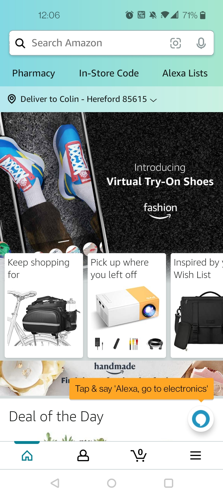
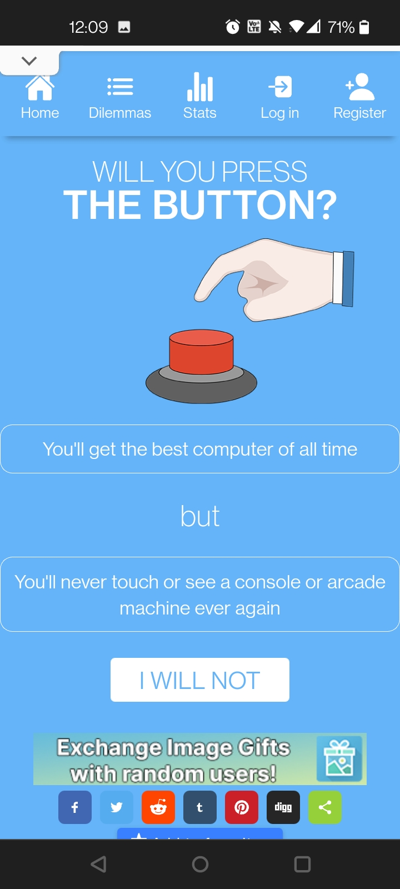
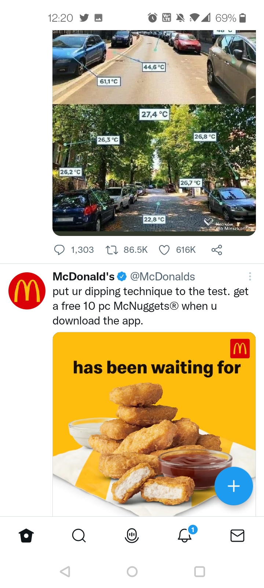

Hick's Law
Hick's Law is essentially a law that explains how a person's length of time in a decision is based upon the amount of items present. The less items there are, the less time it takes. The more items there are, the more time it takes. I chose amazon as an example because it embellishes both. While containing massive amounts of wants that could make browsing go on for hours, they also conatain a 'featured' and 'filters' to help limit selection and make decisions faster.
Fitt's Law
Fitt's Law is pretty much the idea that the closer thew item is the more likely the person is to react with it. Like a bright red button in the president's office. Or even this game that literally asks if you would press the button.
Rule of Thirds
Rule of Thirds is what it is. A design principle based on thirds. Twitter isn't the best site to showcase on mobile for thirds, yet on the website it has a slight example. Sometimes even offsetting items on one third while leaving the other open for a clear view of an image is a good use for thirds.